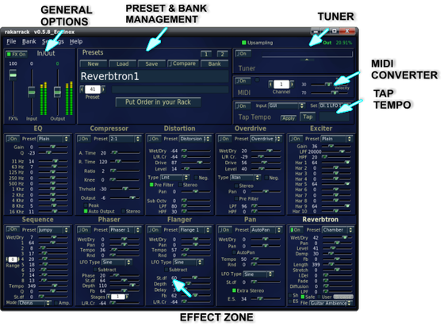
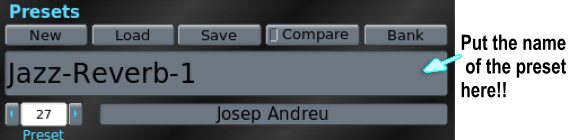
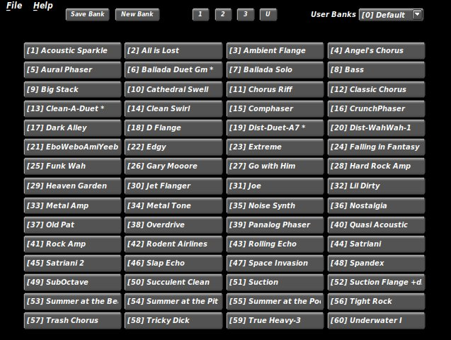
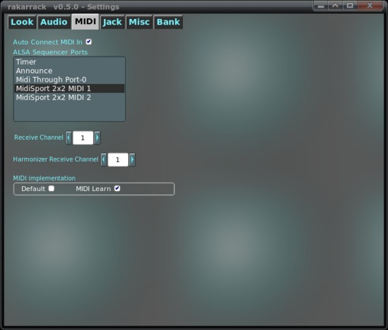
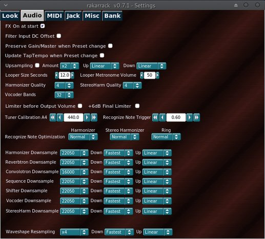
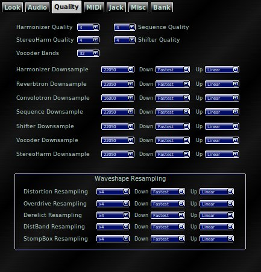
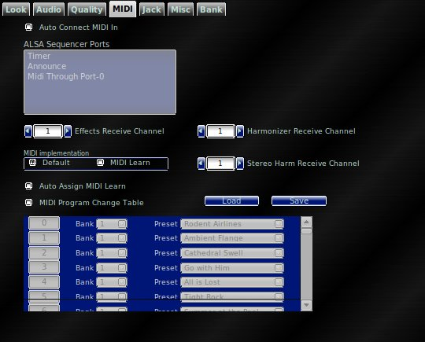
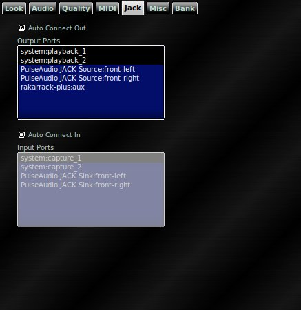
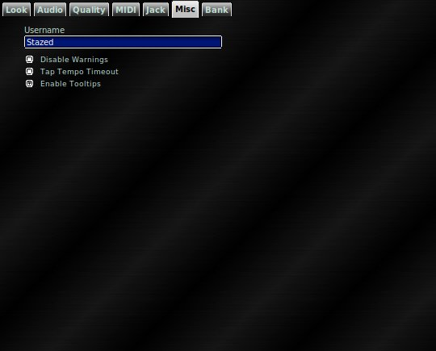
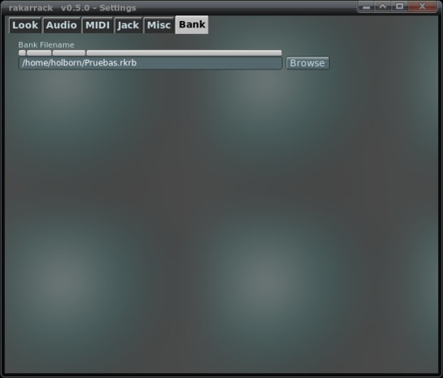

Command line options The Main Screen Connecting Aux Input Presets & banks Preferences Shortcuts Session Support
RAKARRACK-PLUS is a multi-effect processor for guitar players but the signal processing engine allows a full range of parameter adjustment making it suitable for almost any audio processing task. Forty-seven effects are included in this version: Arpie, Cabinet, Chorus, CoilCrafter, CompBand, Compressor, Convolotron, Derelict, DistBand, Distortion, Dual Flange, EQ, Echo, Echotron, Echoverse, Exciter, Expander, Flanger, Harmonizer, Infinity, Looper, MuTroMojo, MusicalDelay, Noise Gate, Opticaltrem, Overdrive, Pan, Parametric EQ, Phaser, Reverb, Reverbtron, Ring, Sequence, ShelfBoost, Shifter, Shuffle, StereoHarm, StompBox, Sustainer, Synthfilter, Valve, VaryBand, Vibe, Vocoder, WahWah .
Ten can be used simultaneously on a chain.
Also Rakarrack-plus has a Tuner and a monophonic MIDI Converter and other features like resampling and Tap Tempo.
Rakarrack-plus can be managed externally by MIDI. The program receives Program Change and parameters can be controlled from Control Change MIDI messages.
The above effects and the MIDIConverter are included as LV2 plugins with the package. In addition, the Harmonizer and StereoHarm LV2s have extra versions for both MIDI control and non-MIDI control.
One of the most important things of RAKARRACK-PLUS is that everything works on a single mouse click. All the effect parameters are on the screen.
The effects are processed on a chain, the chain order processing is fully configurable by the user for each preset. The preset saves all the effects parameters. These presets can be grouped into banks to manage more efficiently. Saving a preset is as easy as typing a name.
Rakarrack-plus is capable of generating high volume output. It has Gain controls in general and some of the effects allow high gain adjustments. Use these gains with caution because they can produce unwanted effects. However, a limiter is applied to the final output which prevents signal level from increasing beyond 0dB. Bear this in mind, for high gains triggering limiting in the output will initiate high-ratio hard-knee compression. This is better than hard clipping distortion, but the audio effect can be undesirable.
Rakarrack-plus is a JACK application, Dave Phillips wrote some good articles in their blog on how to use Linux audio with jack. If you don't know about jack, or you have problems running rakarrack-plus, please read this series of articles:
Troubleshooting Linux Audio, Part 1
Troubleshooting Linux Audio, Part 2
Troubleshooting Linux Audio, Part 3a
Troubleshooting Linux Audio, Part 3b
Please read the INSTALL, README and PACKAGERS.README files provided with rakarrack-plus. You will find there a list of required dependency packages and detailed configuration options.
From 0.5.0 version we have included resampling and the convolotron effect. The quality and settings of resampling must be set with extreme care, because they use a lot of CPU resources. In fact most computers can't afford the "Best" resampling quality if the amount of resampling is "x4" or greater. The resampling process makes each effect use more CPU resources because they need to process more samples. If you combine the wrong settings with convolotron or harmonizer effects that also use a lot CPU resources the results can be unpredictable. Wrong settings can hang up your computer. You have been warned.
Of course resampling increases the sound quality. The way to set up is start with the worst resampling settings, amount = "x2" and Quality "Linear". The jack load CPU value is displayed in the status bar in the preset block. If you want more accurate CPU usage values use top, htop or other CPU monitors. Then increase the values assuming that the next step in quality could use double the CPU versus the current set. That is not exact in the lower resampling quality levels, but is more accurate in the high levels. Experiment to find a good balance between amount and quality settings to obtain the best sound that your computer can afford. Don't forget that each effect also uses more CPU with resampling. The best result is to set the resampling settings using a preset that has five or six effects.
Convolotron has a "Safe Mode" parameter, that "magically" limits the length of the Impulse Response file read. This is safe because it limits the CPU usage. The maximum length is calculated reading the bogomips and is not dynamic and does not measure other tasks that your computer may be performing. We have been careful to calculate this maximum value, but if you use resampling, this "safe" value can be invalid. It may cause, depending of the Impulse Response file read, the convolotron effect to have no sound. This can happen if the value is less than 5 ms.
Increasing the length parameter will obtain a better convolotron sound. If you unset the "Safe Mode" you can set the length to a desired value without the limit, but do so with extreme care. Check the jack load CPU in the status bar or use a CPU monitor to see what your computer can afford. Do so with small steps and check the CPU usage, or you may hang up your computer. You have been warned.
About Clipping and limiting.
Rakarrack-plus includes an output limiter to help you keep the signal at or below maximum recording levels. There are two indicator lights along the top of the display to indicate when limiting and clipping is active.
Lmt Limit. This is the compressor part of the limiting function. This lets you know when the Rakarrack-plus output limiter is automatically reducing volume because the signal level is too high.
Clip The output limiter is clipping the peaks of the signal. Usually the attack of dynamics are clipped for short periods of time before the compressor catches up with the high signal level. When the signal level is extremely high, the peaks will always be clipped. This is indicated with a red flashing light.
Both clip and Lmt mean the same thing to you as the user: Turn down the output until the lights don't blink, or if they blink, very very infrequently. Any time the lights blink, there is some distortion on the output, and it is probably unwanted distortion. It will be noticeably audible distortion if the lights blink frequently, or for long periods of time.
This is not an arbitrary limit. This is at the limit where the input to a recording program such as Ardour or Qtractor will be too hot. If it was not clipping in Rakarrack-plus, it would be clipping in Ardour, and would be worse sounding. Most sound cards will physically clip on the hardware output at these levels. The full range in Rakarrack-plus will produce a full range signal swing.
|
Short Format |
Long Format |
|
|---|---|---|
|
-h |
--help |
Shows the command line options and exits. |
|
-n |
--no-gui |
Start the application without GUI |
|
-l file |
--load=file |
Load file single Preset |
|
-p # |
--preset=# |
Set Preset number # |
|
-b file |
--bank=file |
Load a file Bank |
|
-x |
--dump-preset-names |
Dump Bank preset names |
|
-j Name |
--jack-client-name=Name |
set alternate jack/alsa name: default=rakarrack-plus |
rakarrack-plus -l mypreset.rkr Starts Rakarrack-plus and loads the preset file mypreset.rkr
rakarrack-plus -n -b mybank.rkrb Starts Rakarrack-plus without the GUI and loads the bank file mybank.rkrb

The connections shown in the screenshot correspond to a motherboard sound card. The guitar is connected to the input line. Obviously this configuration can vary depending of your sound card. Rakarrack-plus has two inputs to allow use of stereo devices. The screenshot shows the connection of a guitar, usually mono aural.
The "aux" audio input is used by the Vocoder effect for voice input. Also it is set as the default input for the Analog Control Interface (ACI).
The state of the rack can be saved to a file at any time, either pressing the "Export" button or via the menu File->Export Preset. The export file is a text file that can be shared and imported from other users. Rakarrack-plus default extension is .rkr, but this is not required. These single preset text files do not have to be kept in the User directory to be used.
Set the preset name here:

If the user modifies any preset bank, The "compare" button allows you to compare the sound of the current state of rakarrack-plus with the original bank preset from which it departed.
You can use banks to store groups of presets. Sixty presets can be saved on a bank. To include a preset in a bank you must first indicate the name of the preset on the main screen, open the bank window and click on a empty slot with the right mouse button. To retrieve a preset stored in a bank, you must open the window of banks and click the left mouse button on the preset desired. You can also use the Preset selector on the main window.
To save a preset in a bank:
Put descriptive name to the preset
Open the bank window (B)
Press the right mouse button in a empty place OR
Press the right mouse button on an existing preset if you wish to overwrite it.
To retrieve a preset from a bank:
Open the bank window (B)
Click the left mouse button on the preset
To swap presets in the window:
Open the bank window (B)
Click the left mouse button on the preset, drag and drop on the preset you want to swap
When rakarrack-plus starts it will load the last bank used from the previous session unless you specify another bank on the command line. You can also load/save any bank from the menu File. By default, the installation included banks are installed with root privileges and cannot be overwritten. They are installed in the data directory selected during the configure process, normally in "/usr/share/rakarrack-plus" or "/usr/local/share/rakarrack-plus". These banks, Default.rkrb, Extra.rkrb and Extra1.rkrb should be copied to another file and placed in the user directory location if you wish to modify them. The banks contain default presets developed by the development team and some friends who have contributed in this facet.
The "1", "2", "3", "U" buttons are for fast bank loading. These buttons load the Default.rkrb, Extra.rkrb, Extra1.rkrb and the user setting defined bank set in User preferences.
In addition three addition special effects banks are also included and can be selected from the bank window "User Banks" choice menu.
Random
The "Random" button generates a random preset. Right mouse button on the random button will show a configure window. You can adjust how the random button will generate a preset. By default the random button will select from all rack effects and randomly choose an individual effect preset. Also the number of active effects will be randomly determined to a maximum of six. These settings can be changed from the random configure window. You can choose to have all parameters of the rack effect to be set randomly, and exclude any effect from the selection process. In addition, the number of chosen effects can be set, as well as whether they all should be active or randomly set as active.
You can also set the parameters to any individual rack effect randomly by right mouse button on the effect name from the main window rack.
CAUTION!!!
When setting any parameters randomly or using the random button, you should always set your speaker volume to minimum or off before setting. Then apply sound to Rakarrack-plus and watch the output volume meter. Setting parameters randomly can result in feedback as well as other issues that will maximize the volume!!!
Bank Window

At the top of the Bank window, the title bar shows the loaded bank. Click on the individual preset buttons or use the preset counter in the Preset section to change the preset. The hot keys '+' and '-' can also be used to cycle through the presets.
Presets marked with (*) use the Select mode in the Harmonizer effect. This means you need to play a monophonic melody in the Key/Chord selected. The harmonizer recognizes what note you play and creates a second voice in the Key/Chord selected.
Save Bank
Save the currently selected bank showing on the bank window. Ctrl-S can be used for the keyboard shortcut. You cannot save the default program banks, so if you want to save any changes to the default banks, use File/Save. All user banks MUST be saved in the user directory User preferences. See "User Banks" below for recommended file saving naming for MIDI bank select. Upon successful saving a brief message will display above the bank presets indicating the file has been saved and the name and path
New Bank
Select button for clearing the bank presets buttons for new user banks.
R
Reload the User Banks. WARNING: This will re-load the currently active bank. You will not be prompted for any modified changes. All modifications to the currently active bank will be lost! Select this button to refresh the "User Banks" choice list and update all user banks for any changes made since the program started. Useful if there have been changes to the user banks outside the current program instance. For example, from a second rakarrack-plus instance.
MIDI Program Select
The number in [XX] brackets preceeding the label is the MIDI program change number that must be sent to select the indicated preset.
User Banks
The "User Banks" choice displays the available user banks that are in the directory specified by User Directory in User preferences.
User banks are loaded on program start by scan of the user directory. The files are selected by .rkrb extension and will appear in the choice display in alpha numeric order. The first six CC 0 Bank Select parameters are reserved for the program provided default banks. From CC 0, parameters 6~127 can be used for user banks. For best results, files could be named using CC parameter value (PV).
For example:
PV_06_Mybank.rkrb
PV_07_Another.rkrb
MIDI Bank Select
The number in [XX] brackets preceding the bank label is the MIDI CC 0, Bank Selection parameter value to send for MIDI bank select.

Colors
From the Settings Look tab window you can configure different aspects of the application. The colors of the four elements on the screen, background, buttons, labels and leds can be adjusted.


Scheme
Also you can select the following schemes of widget decoration, X11, fltk, gtk+, plastic and Gleam. The following is a small example of fltk and plastic schemes.


Font
Select the label font for the entire program. You can alpha search as well as use the up and down arrows. The Font type will automatically change on each selection
Font Size
Increase/Decrease the font size of all windows. Beginning with Rakarrack-plus the fonts are now auto resized. You likely will not need to adjust the font sizes unless you choose an extra large or small font type.
Enable Background Image
Choose between enabling the background image or using the background color choice.
Background Image
You can select a PNG background image with the 'Browse' button. Some background images are distributed with the package. They are installed in the data directory selected during configuration, normally in "/usr/share/rakarrack-plus" or "/usr/local/share/rakarrack-plus".
Set Main Window Scalable
Check this button if you want the main window to resize according to the default width X height scale. This may give better results for font resizing in some cases. Un-check to allow full resize capability.
Reset
Select the Reset button to revert all 'Look' items to the defaults.The Skin save/load menu options located in the main menu, save or restore the rakarrack-plus look. If you have made a nice look and you want to share, please send this file and the background picture to any of the rakarrack-plus team members and it will be included on the website.

Fx On at start
This option sets the FX On at the start. By default it is Off.
Filter Input DC Offset
Input DC Removal. Removes constant offset from input signal. If you experience strange behavior with compressor or distortion, or if you see output signal even when no sound is going in, enable it. A "cheapo" sound card or microphone inputs can be sources of this problem.
Preserve Gain/Master
The Input Gain and Master Volume are stored in the preset and applied when the preset is loaded. If this option is enabled, the Input Level and Master Volume will not be modified when the preset changes.
Update Tap Tempo
If enabled, the Tempo parameter on any selected preset will be updated with the Tap Tempo value/settings. By default, the saved Tempo settings from the preset are used.
Limiter before Output Volume
Rakarrack-plus uses an invisible end chain Limiter to limit the output signal level. This option puts the limiter before the Output Volume slider.
The Limiter is a hard-knee compressor with a fast attack time followed by peak clipping. It is best to leave this as default since it will have no effect unless the final output signal is high enough to clip on the input of Ardour (or other recording program). Reasons you may wish to put this in front of the volume control are as follows:
1) It produces a nice overdrive when driven by something "hot" like ShelfBoost. Then you can overdrive it and use output the volume to bring the signal level down to a reasonable recording level.
2) If you need a hard limiter to set the maximum to a certain level, this may prove to be a useful tool.+6dB Final Limiter
This option add 6 dB to the final chain Limiter output signal.
Master Upsampling
Enable upsampling using libsamplerate. This is the master upsampling that will affect all sound processing. With this enabled, Rakarrack-plus will process the effects with a higher sample rate than received from the sound card. The master upsample parameters will take effect the next time you launch rakarrack-plus. Enabling upsampling in Rakarrack-plus will use a lot more computer CPU resources, and will result in very professional sounding effects. Take care to adjust all the upsampling settings in small increments because you can hang your computer if your main processor can not handle the resampling parameters. Each level of libsamplerate quality uses more and more resources, and of course each effect uses more CPU resources because it needs to process a higher amount of data in the same amount of time. We highly recommend to start with Linear quality and amount "x2" and check your CPU usage with "top", and then increase the amount/quality as desired.
Amount
Amount of resampling (x2, x3, x4, x5, x6). This is a multiple of your Jack samplerate.
About Resampling Quality
Here is the summary:
Best Best sinc interpolation.
Medium Reduced Bandwidth sinc interpolation.
Fastest Fastest sinc interpolation.
Linear Linear interpolation, not band-limited.
Zero Order Blazingly fast, but does not interpolate.
The only difference between Best, Medium, and Fastest is the bandwidth. "Fastest" limits to 80% of the maximum bandwidth, but the interpolation quality is equal to Best sinc interpolation. As a general rule, you can often save some processing requirement by using a lower quality upsampling setting (Linear, or Zero Order), but it is important to use high quality downsampling if any of the effects you use add higher harmonics not present at the input (distortion, Arpie, Harmonizer).
If using Linear or Zero Order resampling it is advisable to use a low-pass filter on the input (like CoilCrafter or MuTroMojo), then again as the last in line. The filter will perform interpolation before the signal is processed.
Resampling has two uses:
1) Improve the "richness" of filters & Equalizers. This will by nature improve the accuracy of the EQ's while making filter effects such as Chorus, Flanger or Phaser sound more natural.
2) Reduce the amount of aliasing effect produced by nonlinear distortion. Aliasing: A digital signal cannot represent any frequency higher than 1/2 the sampling rate. Any frequencies introduced to the digital system higher than 1/2 sample rate are folded back (aliased) into the 0 to 1/2 sample rate range. Generally aliased frequencies are not musically related to the original tone, and are often the cause of the harsh "digital distortion" sound.
When you use a Distortion effect (StompBox, Valve, Overdrive, etc.) the nonlinear function used in waveshaping produces harmonics that are not found in the original signal. Many of these harmonics are significantly higher than 20kHz, and even go to several hundred kHz. The solution is upsampling. If you increase the samplerate to several times the original, then the "headroom" you have available to represent these high frequency harmonic components increases. Since the harmonics decrease in amplitude as frequency increases, then there comes a point where the aliasing of these frequencies is inaudible.
The caveat is downsampling. If you upsample then create these higher harmonics, you have to filter this out of the signal before you downsample. The sinc interpolation settings are band-limiting by nature, and this is what you want if you regularly use distortion. The process of sinc interpolation removes any frequencies higher than 1/2 the target samplerate before resampling. It is better to use 2x upsampling with linear up and fastest sinc down than to use 4x linear or zero order up/down with distortion. A downsampling process that is not band limited to 1/2 target sample rate will defeat the purpose of upsampling. If your CPU can handle it, the best is 6x upsampling with fastest sinc for up and down.
Unless you really need the 16kHz to 20kHz range in your instrument, don't use Medium or Best. Indeed these improve bandwidth, but the transient filter response is worse with increasing interpolation quality. Particularly for dynamic or percussive instruments, "Fastest" sinc interpolation is the highest quality you can use.
If your CPU can't handle the high quality interpolation, you can put MuTroMojo on the end of the FX chain and balance between filter cut-off frequency and stages to get good rejection at 16-20kHz.
Finally, it is mathematically proven that sinc interpolation with infinite length will PERFECTLY reconstruct the original analog input signal in the case of infinite upsampling. This will also perfectly reproduce what the signal would be if sampled at the higher samplerate (since infinite upsampling is impossible). Another impossible thing is an infinitely long sinc function. Sinc interpolation uses a Windowed Sinc function of a length where the imperfections introduced by truncation create errors of magnitude less than the anticipated noise floor. Based on this theory, many high end CD players use up to 128x oversampling in the digital-to-analog conversion process.
For somebody who doesn't understand mathematics, this means that you don't get ugly distortions by downsampling, say to 16kHz, then back to 48000. You only lose bandwidth. Downsampling to 16kHz then back to 48kHz is no worse than applying a low-pass filter at 6.4kHz (80% of 16kHz/2) for fastest sinc, while you will gain some bandwidth nearing 8kHz for Best quality sinc. Most amp cabinet responses tend to roll off near 5kHz or 6 kHz. For reverb, this is not much different than increasing the "damp" parameter. Limiting bandwidth near 6.4kHz means you don't lose as much quality as you would think from what seems such an abysmally low samplerate while it is amazing how little CPU usage is required to use Reverbtron and Convolotron with internal samplerate set this low. If you use linear or zero order, all bets are off -- unless you apply band limiting filtering elsewhere, or know for a fact that the input signal does not have any harmonics above 8kHz. Incidentally, you can probably get some amazingly high quality bass + bass cabinet sounds with Convolotron set to 16kHz internal samplerate.
Up Sampling Quality
Upsampling quality, select the libsamplerate quality for the upsampling procedure.
Down Sampling Quality
Downsampling quality, select the libsamplerate quality for the downsampling procedure.
Looper Size Seconds
Is the size in seconds of the buffer for the Looper effect. The memory is allocated when Rakarrack-plus starts, so you will need to restart Rakarrack-plus for this to take effect. If you do not plan to use the Looper, then make this a small number so Rakarrack-plus does not hog memory you are not going to use.
Looper Metronome Volume
This is to adjust the Looper Metronome Volume
Tuner Calibration A440
Here you can calibrate the Tuner, this also calibrates the MIDI Converter, Ring and Harmonizer recognize note functions.
Recognize Note Trigger
This is the trigger for the Recognize Note function used by Harmonizer, StereoHarm and Ring. The default value is ".6" but better results may be achieved if you reduce this value. The note recognition also depends on the input signal level. A balance between this value and the input signal level is necessary to achieve the best results.
Recognize Note Optimization
This option filters the data sent to the Recognize Note functions to the specified frequency range of various instruments

All settings on the Quality tab are now immediate. There is no longer a need to restart Rakarrack-plus for the settings to take affect. The process of changing the quality settings is NOT real-time safe. For this reason, all effect processing must be bypassed briefly during the quality change. If a sound is being played during the change you will hear the unprocessed sound for a brief moment. After the quality change, all effect settings will be resumed with the change.
Harmonizer, Sequence, StereoHarm and Shifter Quality
Selects the quality of the audio engine, used by Harmonizer, Shifter and Sequence effects. The available values are "4,8,16,32" and the default value is "4". Incrementing the quality increments the CPU usage by this effect. Take special care if you are using resampling also.
Harmonizer, Reverbtron, Convolotron, Sequence, Shifter, Vocoder and StereoHarm Downsample
Here you can select the sample rate that each effect uses internally. This can make it possible to use effects with higher CPU demand simply by trading bandwidth. For example, if you are resampling at 2x or 3x (master resample setting), you will need to limit the sample rate of some effects in order to be able to use certain presets. Of course that may reduce the sound quality, but certainly you can find a good balance between CPU power and quality. Keep the "About Resampling Quality" information in mind when deciding what to select.
Whaveshape Resampling
Distortion, Overdrive, Derelict, DistBand and StompBox effects use the waveshape internal class to saturate the signal. This process produces aliasing. Here you can resample in order to eliminate the aliasing which will increase CPU usage. Notice that this resample is multiplied by the normal resampling. For example, if master resampling is 2x, and you select 2x for Waveshape, then Waveshape internal resampling will be 4x jack sample rate. The balance you need to find is between the number of resampling operations, quality of resampling, and resampling amount. For example, if you are only using Stompbox and maybe reverb in a preset, then it may be better to set 4x fast sinc interpolation for master resample than to use Waveshape resampling. If you are using other effects, and some higher CPU effects, then it may be better to use 2x master resample with linear up/down, then 2x Waveshaper resample with linear up, fastest sinc down.

Auto Connect MIDI In
Check this box if you want to auto connect the ALSA rakarrack-plus MIDI IN to another device when the program starts. Use the scroll window to select the device you wish to connect with. The devices selected will auto connect to MIDI IN when rakarrack-plus is first started. Connections made when rakarrack-plus is running will be immediate and set as startup connections. If you wish to make connections that are not auto connected on start, use Qjackctl, Patchage, or other utilities to do so.
Midi Channels
Specify the MIDI Receive Channel for rakarrack-plus. There are also specific channels to receive the MIDI Chords for the Harmonizer and Stereo Harmonizer.
The MIDI Implementation radio buttons select how rakarrack-plus interprets the incoming MIDI Control messages. By default rakarrack-plus uses the MIDI Implementation Chart. If the MIDI Learn button is checked, the default tables will be ignored and the user created tables from MIDI Learn will be used. In order to access the MIDI learn window you must first check the box for "MIDI Learn".
If you enable this option you will not see the MIDI Learn window when you right click over a MIDI controllable effect parameter. The incoming MIDI control message will be assigned "automatically".
MIDI Program Change Table
Use the scroll table to select the Bank/Preset you want when a MIDI Program change message is received (0~127). If the option is disabled rakarrack-plus will only recognize program change (1~60) in the current bank. Use the Save and Load buttons for saving and loading multiple user defined program change tables. You can also use MIDI CC 32 (Bank Select (fine)) for selecting the table with MIDI. All program change tables must be placed in the User directory to be used. These tables are selected by .rmt extension and will be sorted alpha-numeric for MIDI CC 32 selection. For best results, the file name should be based on the CC 32 parameter value Ex: PG_00_My_Table.rmt, PG_01_Another_Table.rmt.

Jack auto connection ports
Select the "Auto Connect Out" box if you want to automatically connect the rakarrack-plus Output.
Select the "Auto Connect In" box if you want to automatically connect the rakarrack-plus Input.
Select the ports to be connected by left mouse click on the ports listed. Shift click for multiple ports.
If you select a single Input port, it will be connected to the both rakarrack-plus Input Ports.

Disable Warning
Check this box to disable warning and error messages.
Tap Tempo Timeout
Check this box to enable the Tap Tempo timeout. If it is enabled, the tap tempo will shut off if no (tap) input is received for 8 seconds after the last signal.
Enable Tooltips
Check this box to enable rakarrack-plus tooltips.
Focus Delay
Set the delay time to automatically focus of the widget under the mouse pointer. The mouse focus setting is disabled by default.
NSM Single State
Check this box if you want NSM session to always save the last state of the active preset. This will save all changes to effects including MIDI control changes. The default behavior will not save changes to the active preset as the changes are assumed to be for live performance reasons. This check box is de-activated when not in NSM mode.

User Directory
Specify the directory where rakarrack-plus should look for user files. The following user files MUST be placed in the user directory or the program will generate an error message, and the file cannot be used:
User Banks
Convolotron .wav files
Echotron .dly files
Reverbtron .rvb files
Program change tables
Bank Filename
Specify the file for the bank file to be loaded and associated to the "U" button. This file MUST be located in the user directory.
Author
Here you can define a nickname to be used for new presets that are created. The development team intends to create banks of effects created by users. These presets should assume the same license with which this program is released (GPL version 2 or higher) and suggest carrying an identification in the form First Name Last Name (nick). Of course you have to give a descriptive name to your preset. If you have a good preset and want to share or want it to be included in future versions, send it to this address https://github.com/Stazed/rakarrack-plus
The following keyboard shortcuts are available from the main rakarrack-plus window.
| Key | Function |
|---|---|
| R | Rakarrack-plus Master On/Off |
| T | Tuner On/Off |
| M | MIDI Converter On/Off |
| M | Metronome On/Off |
| H | Tap Tempo On/Off |
| I | Import Preset |
| E | Export Preset |
| Ctrl+S | Save Bank File |
| B | Show/Hide the Bank Window |
| G | Tap Tempo set |
| L | Open the MIDI Learn Window |
| J | Open the Settings Window |
| O | Open the Order window |
| N | New preset |
| P | Compare |
| + | Next Preset |
| - | Previous Preset |
| F1 | Open the Help window |
| F2 | Decrease the Output Volume |
| F3 | Increase the Output Volume |
| F5 | Looper Play |
| F6 | Looper Stop |
| F7 | Random Preset selection |
| F8 | Switch between Midi Converter & Metronome |
| F9 | Hide/Show unused Effects |
| F10 | +10 dB Booster |
| F12 | Toggle Full Screen |
| Insert | Add user preset |
| Delete | Remove user preset |
| A | Open the Analog Interface Window |
| X | Exit |
| Esc | Exit |
The effects are enabled pressing the keys (1,2,3,4,5,6,7,8,9,0). These keys are unrelated to the specific effects but are associated with the position. The key 1 triggers the effect that is in the first position (the first effect to the left in the first row) and so on until 0 (the last effect to the right in the second row).
The Keyboard Up/Down - Left/Right arrows decrease/increase slider values by "1". Shift+(Left/Right Arrow) decrease/increase slider values by "10". Ctrl+(Left/Right Arrow) decrease/increase slider values by "100". You can navigate through the parameters from the keyboard using the Tab, Up/Down arrow and select with the space bar keys.
Rakarrack-plus supports NSM, both Non Session Manager as well as New Session Manager. For session management, the current instance Settings/Preferences are saved as well as last used bank and preset. In addition, gui show/hide is supported. All bank, user files, Program Change table and "Insert" presets are global to all instances. For each Rakarrack-plus instance in the NSM session you must set the User bank in Settings/Preferences/User to your global user bank. SIGUSR1(save) and SIGINT(quit) signals can also be used for session support.
NSM Single State
In Settings/Preferences/Misc: Check this box if you want NSM session to always save the last state of the active preset. This will save all changes to effects including MIDI control changes. The default behavior will not save changes to the active preset as the changes are assumed to be for live performance reasons. This check box is de-activated when not in NSM mode.